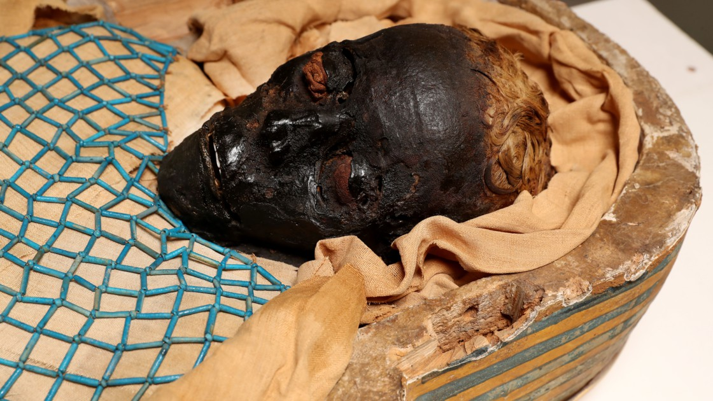
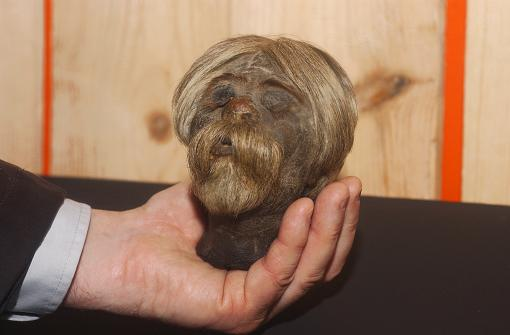
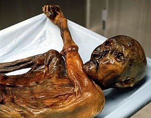
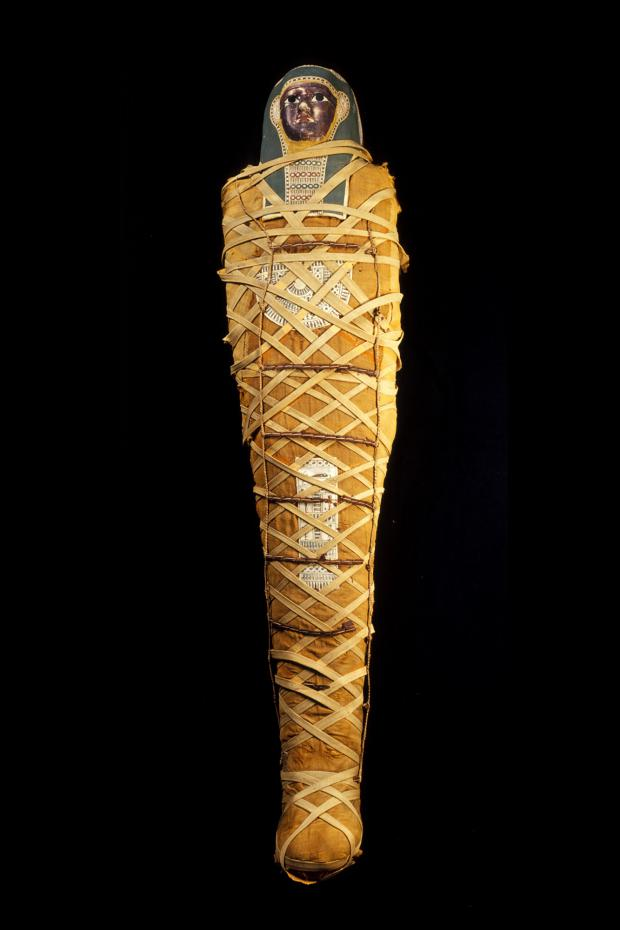
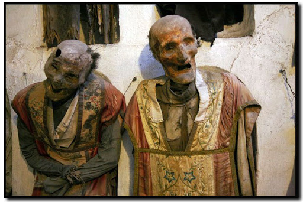
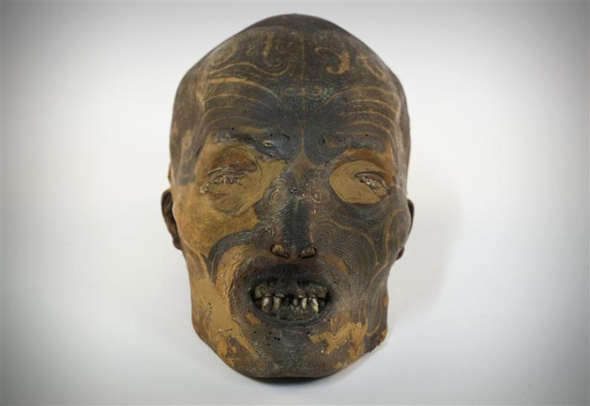
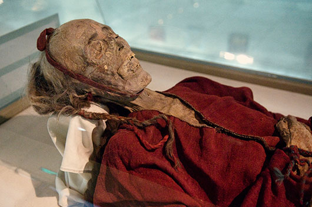
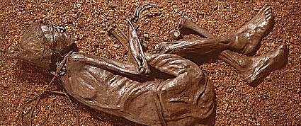

De manière générale la décomposition des cadavres est liée aux bacteries à l'interieur de celui-ci. Néanmoins il existe des circonstances qui empechent la putréfaction et la décomposition du corps.
C'est ce qu'on appel momification
Les momies
Malgré ce qu'on pourrait penser il existe de nombreux types de momification, mais il y en a 3 principales :
Exemple type de momification artificielle pratiquée en Egypte antique pour les rites mortuaires de la famille royale



Momie artificielle égyptienne
Momie mixte tête réduite jivaro
Momie naturelle Otzi
Différences et explications
A l'aide de l'ouvrage de Phillipe Charlier autopsie des morts celèbres, chapitre " road momie"

La momie dite "artificielle" est la caracteristique de la momie égyptienne: Le cadavre est ouvert, les organes humides sont retirés et remplacés par des aromates et du bitume pour fixer le corps. On le sale. Puis on bande le cadavre pour le stabiliser
Voici une vidéo explicative
La momification dite " mixte" ou " intermédiaire", une technique, deux méthodes.
Première méthode. On extrait les fluides corporelles avec par exemples des chaises de percés ( les fluides s'écoule par les orifice naturels) puis on suspend les corps à l'air libre pour les faire sécher.
Deuxième méthode. La momification par cuisson à haute température. La peau se transforme en cuir et deviennent inaltérable. Généralement ce processus ne concerne que la tête et non le corps entier.

Cadavres Capucins
Exemple de momification par extraction des fluides. Traitement réservé aux élites. Ces momies se trouve à Palerme en Italie

Tête Maori
Exemple de momification par haute température. En l'occurence une tête tatouée puis momifiée.


Otzi l'homme des glaces
Momie des Tourbières
Momie Tohkarienne
Enfin les momies naturelles en trois categories:
1) Il n'y a pas de putréfaction sans eau, dans un milieu tel que le désert qui va absorber toute l'eau empéchant la dégradation du corps qui va se momifier.
2) Dans un endroit extrement froid les bactéries ne peuvent pas se multiplié et le corp gèle.
3) Lorsqu'un cadavre se niche dans un marécage ou une tourbière. L'abscence d'oxygène et un ph acide provoque un tannage du corps mais pas de putréfaction
Je vous invite à découvrir cette carte interactive qui nous renseigne sur la position et datation des momies dans le monde.
Veuillez noter que cette carte demeure partielle : elle ne represente pas tous les individus momifiés retrouvés. Les datations sont pour la plupart éronées à mon sens. Bien qu'elle soit representative du phénomène, cette carte à des limites